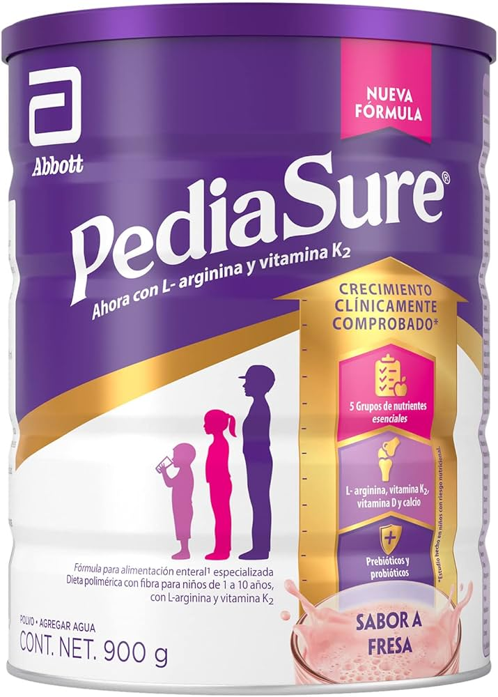

Nutrición Clínica para Niños
El PediaSure está clínicamente comprobado para apoyar el crecimiento. Con su mezcla de proteínas, vitaminas y minerales, es el aliado ideal para asegurar que los niños de 1 a 10 años alcancen su máximo potencial.